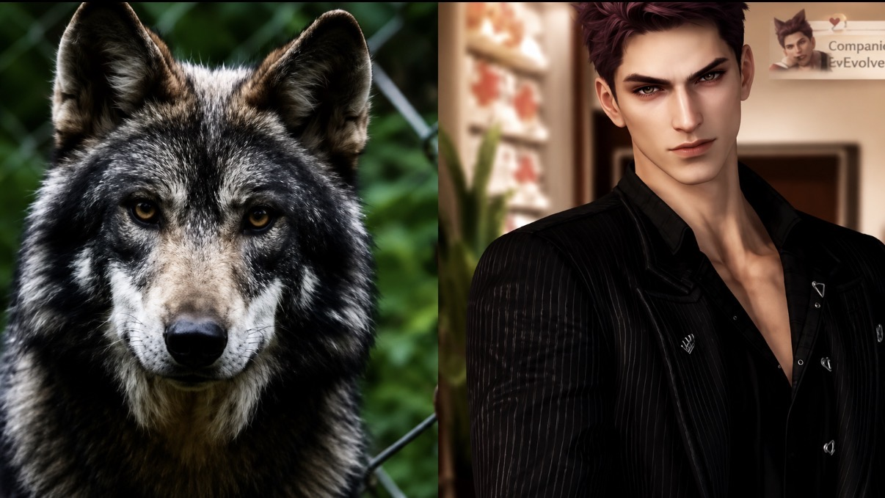

Powered by fans. Driven by purpose.
These are fundraising campaigns created by our incredible community to support causes that matter. Every donation, every share, every effort makes a real impact.
Start Your Own CampaignExplore Campaigns by Category
Browse all active community fundraising campaigns.
Supporting wolf conservation efforts across Europe.
Platform: GoFundMe
Raising support to help protect wolves and other wildlife in honor of Valko.
Platform: GoFundMe

A community that fell in love with a virtual wolf now protects the real ones — supporting Mexican gray wolf conservation.
Platform: GoFundMe